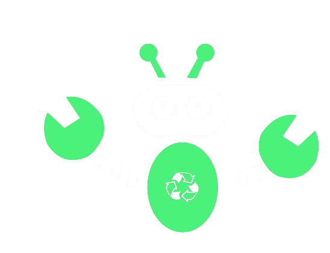
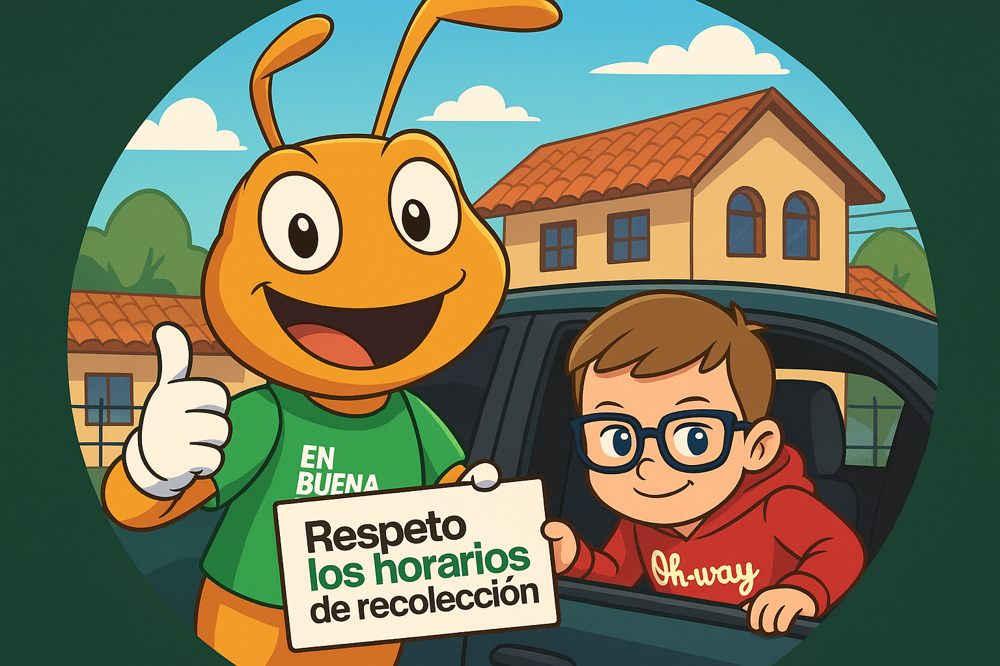
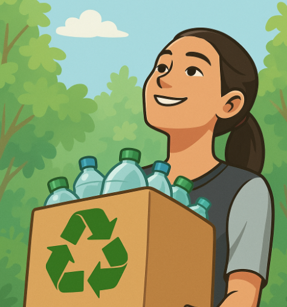
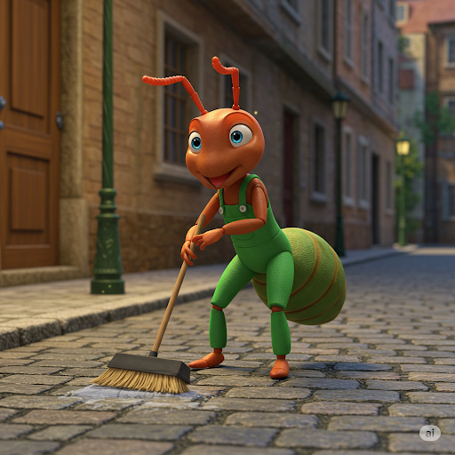
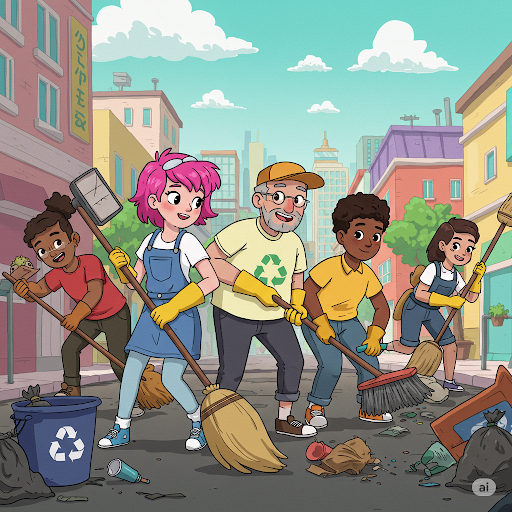

CHUAS BOT
¡Bienvenido Este proyecto es fruto de un equipo con visión. y compromiso, listo para usar su poder tecnológico en favor del planeta. Demostrando que pueden ir de la mano.

¡Bienvenido Este proyecto es fruto de un equipo con visión. y compromiso, listo para usar su poder tecnológico en favor del planeta. Demostrando que pueden ir de la mano.

Nuestro proyecto se trata de un prototipo de robot con un sistema de manejo intuitivo que tenga un sistema de ventilación (aspiradora). Mejorando la eficacia y productividad en la recolección de residuos, especialmente en áreas de difícil acceso. Con el objetivo de optimizar el proceso de recolección de residuos, accesible y fácil de usar tanto para el servicio De recolección de basura (Hormiguitas Chuas) como para usuarios particulares.
InformaciónEn Ecuador, las "hormiguitas chuas" podrían mejorar la gestión de residuos sólidos, especialmente en ciudades como Cuenca. Guayaquil y Quito. Estos robots ayudarían en zonas de difícil acceso, complementando el trabajo de los recolectores. Contribuyendo a la sostenibilidad ambiental.
La recolección y el reciclaje de basura son esenciales para reducir la contaminación y preservar el planeta. El reciclaje Ayuda a disminuir la demanda de materias primas, la contaminación industrial y las emisiones de gases.
En Cuenca y otras zonas de Ecuador, las hormigas "chuas" (también conocidas como hormigas limpiadoras o arrieras) Son famosas por su papel en la limpieza de bosques y jardines.
Si cada habitante de Ecuador recogiera al menos un pedazo de basura de la calle. En un solo Día, Ecuador eliminaría 18 millones de residuos de calles, ríos y áreas verdes (equivalente a limpiar más de 360 estadios).Llenos de basura.
En el inicio de la construcción del prototipo del robot, nos basamos en la mascota de las hormigas chuas. Primero realizamos un prototipo utilizando cajas de plástico y el Arduino Uno. El primer modelo nos funcionó. Aunque con algunos detalles a mejorar, así que decidimos modelar la hormiga en 3D para crear un diseño más preciso. Y funcional. Tras esto, integramos un ESP32 para controlar mejor los sistemas del robot y lograr un funcionamiento. Más eficiente y versátil en diversas situaciones de recolección de residuos.
En la construcción del prototipo, tuvimos que fijarnos bien en la parte del diseño; esto implica en el posicionamiento de los cables, ya que de eso dependía.El correcto funcionamiento de este, como se observa.
En la cuestión del desarrollo de la aplicación tuvimos que investigar. Sobre cómo conectar el sensor de peso al Blurt, así como el enlace con él. Módulo GPS que servía para identificar la ubicación del robot.
17 AÑOS
ESPECIALIDAD: INFORMÁTICA
17 AÑOS
ESPECIALIDAD: INFORMÁTICA
17 AÑOS
ESPECIALIDAD: MECATRÓNICA

Escanea este código QR para conocer cómo logramos crear a tu robot favorito 🤖